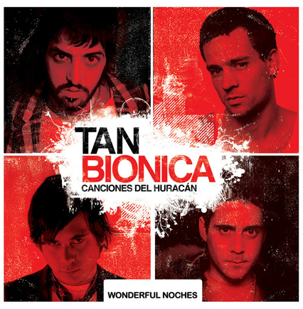
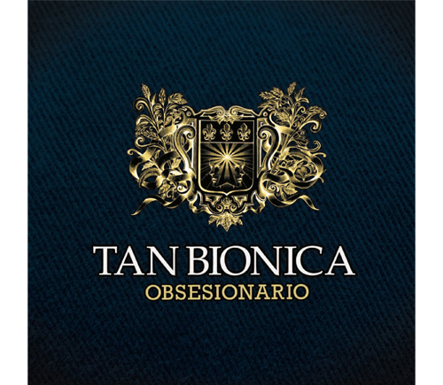
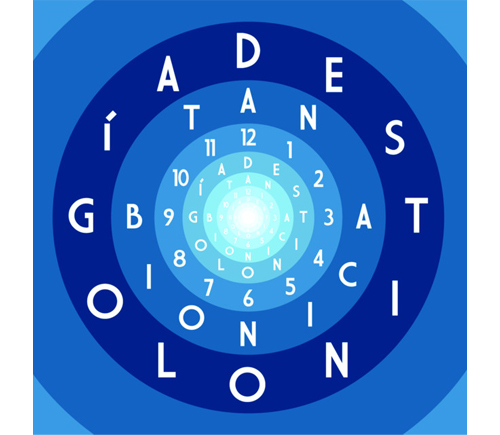
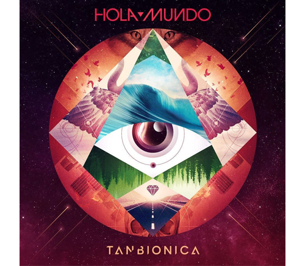

Tan Biónica
Canciones del huracán (2007)
No tiene portada
Primer álbum independiente de la banda, muestra sus raíces electrónicas y líricas experimentales. Aunque menos conocido, sentó las bases del estilo emocional y urbano que los caracteriza.
- Chica biónica
- Arruinarse
- Mis madrugaditas
- La ensalada
- Yo te espero
- Vidas perfectas
- El huracán
- Tapa de moda
- La depresión
- Queso ruso
- Vinidy Swing
- Nací en la primavera
- Bye Bye
- Lunita de Tucumán
Huracán / Wonderful noches (2009)
Reedición ampliada de su debut, este álbum incorpora nuevos temas que marcaron el salto a una producción más profesional. El sonido se vuelve más claro y bailable.
- Chica biónica
- Arruinarse
- Mis madrugaditas
- La ensalada
- Yo te espero
- Vidas perfectas
- El huracán
- Tapa de moda
- La depresión
- Queso ruso
- Vinidy Swing
- Nací en la primavera
- Bye Bye
- Lunita de Tucumán
- Wonderful Noches
- Veneno
- Razón Perdida
- Teléfonos
- Frágil
Obsesionario (2010)
El disco que los catapultó a la fama. Incluye grandes éxitos como Ella. Su estilo pop rock se consolida con letras intensas y arreglos brillantes.
- Ella
- Beautiful
- Obsesionario en la mayor
- Loca
- El Duelo
- Dominguicidio
- Pastillitas del Olvido
- La Suerte Está Echada
- La Comunidad
- Perdida
- El Color del Ayer
- Pétalos
Cancion destacado
El duelo
Destinología (2013)
Consolidación del éxito, mezcla lo emocional con lo épico. Incluye el hit Ciudad Mágica y una estética visual muy definida. Es uno de sus discos más vendidos.
- Ciudad Mágica
- La Melodía de Dios
- Mis Noches de Enero
- Tus Ojos Mil
- Música
- Hola Noviembre
- Vamonós
- Mi Vida Secreta
- Momentos de Mi Vida
- El Asunto
- Poema de los Cielos
- Sinfonía de los Mares
- Ciudad Mágica (Live)
Videoclip destacado
Ciudad Mágica es una de la canciones que se considera mas representativa de Tan Bionica
Hola Mundo (2015)
Disco más experimental, con tintes electrónicos y líricas más oscuras. Representa un momento complejo de la banda, pero con gran calidad sonora.
- Hola mundo (instrumental)
- Tus horas mágicas
- Las Cosas Que Pasan
- La manera que eligió para matarme
- Un Poco Perdido
- 700 Toneladas
- Hola Mi Vida
- A.M.E.R.I.C.A
- Víctimas
- La Otra Manera
- No me atreví a sugerirte que te mueras
Todos estos álbumes se encuentran en plataformas digitales como Spotify y algunos tambien en CD